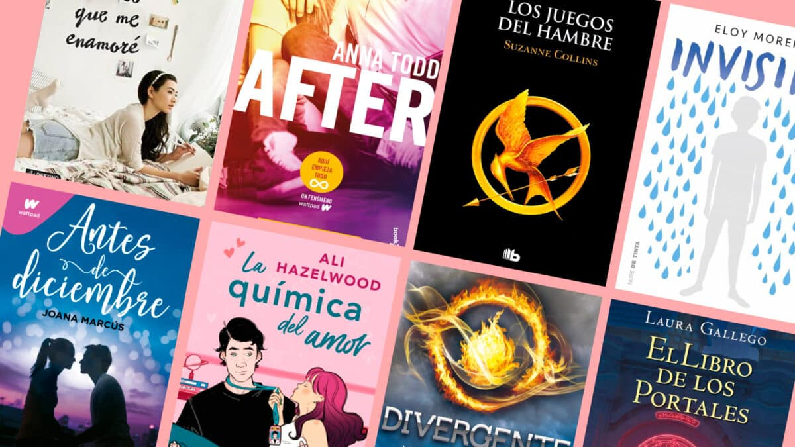
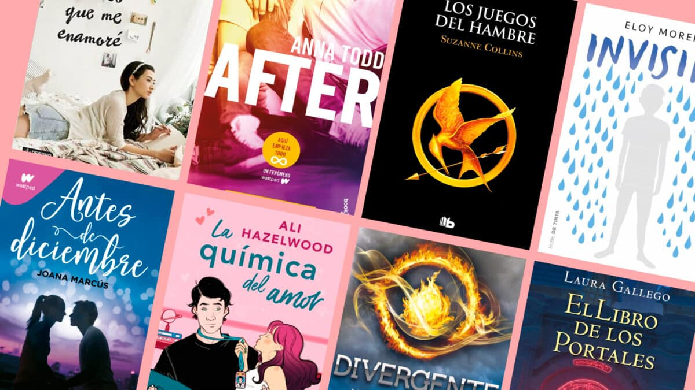
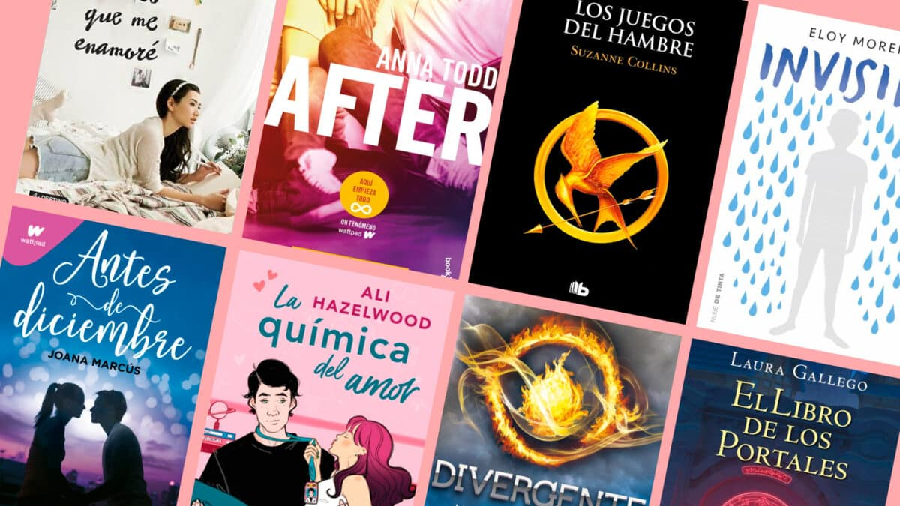

Los libros dirigidos a adolescentes tienen una magia especial: capturan la intensidad, las emociones y los desafíos únicos de la juventud. A través de sus páginas, se abren mundos llenos de aventuras, amores imposibles, amistades inquebrantables y búsquedas de identidad que resuenan con cualquiera que haya sentido alguna vez el torbellino de la adolescencia. Estas historias, aunque a menudo ficticias, están impregnadas de verdades que nos inspiran, nos enseñan y nos hacen reflexionar sobre el mundo que nos rodea y sobre nosotros mismos.
En esta página, te invitamos a sumergirte en historias inspiradas en esos libros que han dejado huella en generaciones. Cada relato es un homenaje a esos momentos únicos de la vida que los libros adolescentes retratan tan bien. Ya sea que busques revivir tus años de juventud o encontrar nuevos puntos de conexión con esta etapa de la vida, aquí encontrarás relatos que te harán reír, llorar y soñar. ¡Bienvenido al rincón donde la ficción y la realidad!.

Una saga de libros es una serie de obras literarias interconectadas que suelen compartir un mismo universo, personajes principales o una trama general que se desarrolla a lo largo de varios volúmenes. Las sagas pueden abarcar géneros muy variados, como fantasía, ciencia ficción, romance, misterio o aventura, y suelen dividirse en partes para permitir una exploración más profunda de la historia y los personajes.
Generalmente, las sagas están diseñadas para que cada libro aporte algo único a la narrativa global, ya sea resolviendo conflictos introducidos previamente, profundizando en los personajes o ampliando el alcance del mundo creado por el autor
La diferencia principal entre una saga y una historia de un solo libro radica en la extensión y el desarrollo narrativo. Las sagas se componen de varios libros que permiten explorar tramas más complejas, profundizar en los personajes y expandir el universo narrativo, con cada volumen avanzando o complementando la historia general. En cambio, las historias de un solo libro son autoconclusivas, concentrando toda la narrativa en una obra que resuelve sus conflictos y desarrolla a los personajes dentro de un espacio limitado, con un enfoque más directo y condensado.
Algunas de las historias más memorables del cine tienen su origen en las páginas de un libro. Esta sección está dedicada a explorar aquellas películas que nacieron de obras literarias, transformando palabras escritas en imágenes que han cautivado a millones. Aquí descubrirás cómo los cineastas han adaptado personajes, mundos y tramas de libros icónicos, respetando su esencia o dándoles un giro único para la gran pantalla. Analizaremos las diferencias entre las obras originales y sus versiones cinematográficas, destacando cómo cada medio aporta su propio lenguaje y magia a la narración. ¡Prepárate para un viaje fascinante entre dos formas de contar historias!
Hecho con amor por María Narciso en el bootcamp de tecnolochicas PRO